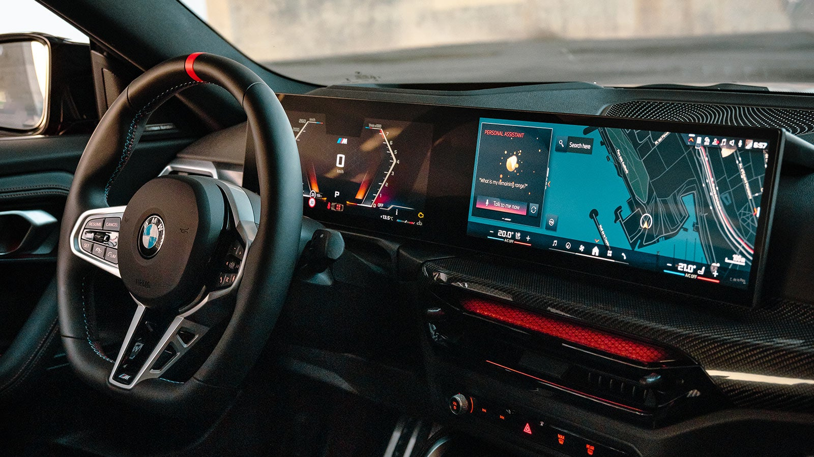
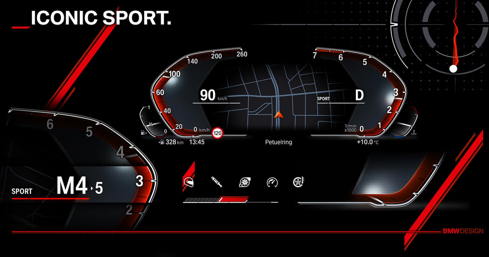

BMW iDrive System
BMW iDrive is an advanced infotainment system used in BMW cars. It allows drivers to control navigation, music, and vehicle settings using a touchscreen, controller knob, or voice command.

BMW iDrive is an advanced infotainment system used in BMW cars. It allows drivers to control navigation, music, and vehicle settings using a touchscreen, controller knob, or voice command.

BMW includes many smart safety systems such as adaptive cruise control, lane departure warning, and parking assistant to help drivers drive more safely.

Modern BMW vehicles use a fully digital instrument cluster that displays speed, navigation information, and driving data clearly for the driver.